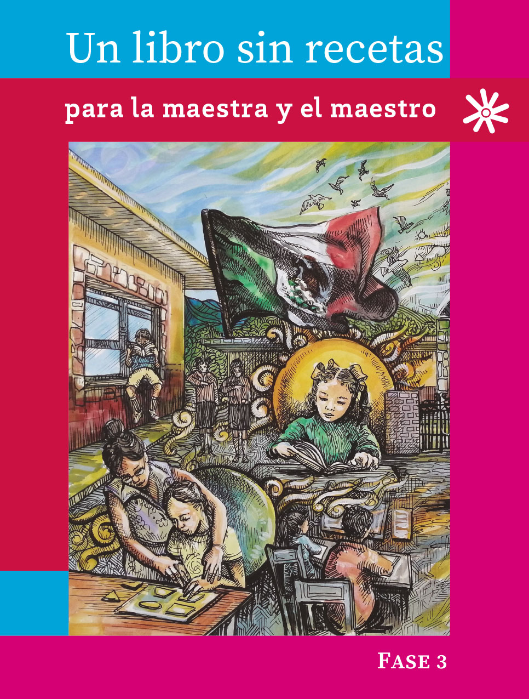

Las metodologías activas son enfoques de enseñanza que colocan al estudiante como protagonista de su propio aprendizaje. A través de actividades prácticas, los estudiantes desarrollan habilidades críticas, colaborativas y reflexivas en contextos significativos. Estas metodologías buscan conectar la teoría con la práctica mediante la resolución de problemas, proyectos en la comunidad, indagación y servicio.
Aprendizaje Basado en Proyectos Comunitarios.Oprima para más informaciónEste enfoque invita a los estudiantes a colaborar en proyectos que impacten su comunidad. Guiados por el docente, los alumnos investigan, planifican y crean soluciones reales, fomentando el trabajo en equipo y la responsabilidad social. Aprendizaje Basado en la Indagación.Oprima para más información Centrado en la curiosidad y el descubrimiento, esta metodología promueve que los estudiantes formulen preguntas y exploren respuestas a través de investigaciones guiadas, desarrollando habilidades de análisis y pensamiento crítico.Aprendizaje Basado en Problemas.Oprima para más información A través de problemas auténticos, los estudiantes aplican sus conocimientos para encontrar soluciones efectivas. Este enfoque fomenta el trabajo colaborativo y permite a los estudiantes desarrollar habilidades de resolución de problemas de manera estructurada.Aprendizaje en el Servicio.Oprima para más informaciónIntegrando el aprendizaje con la acción social, esta metodología busca que los estudiantes apliquen sus conocimientos en proyectos de servicio comunitario, desarrollando conciencia social y un sentido de ciudadanía activa. |
 |